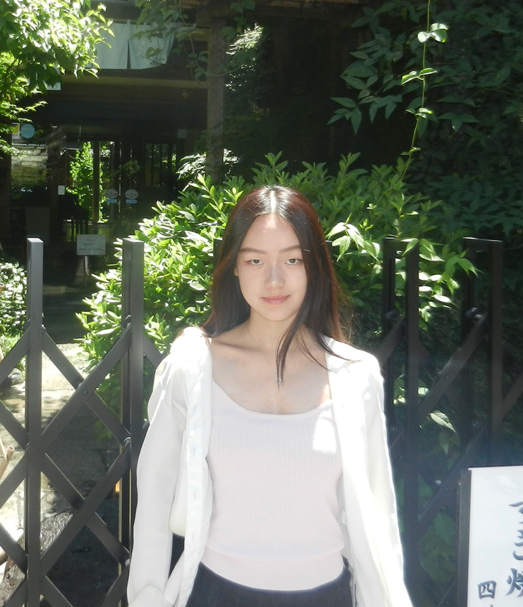

Hi, I’m Harmony!
My curiosity in how different communities and technology interact led me to study Systems Design Engineering at the University of Waterloo. I’m passionate about creating actionable solutions and following through to achieve measurable goals. I’ve managed large-scale projects at non-profit organizations, won case competitions, and collaborated within design teams.
I’m particularly interested in improving systems and technology for underserved communities.
Outside of work and school, catch me
- attempting to return balls in tennis
- harmonizing during karaoke
- cooking up my next side-quest! (food or otherwise)
iFAQ | infrequently asked questions
questions no one asked (but I still have the answer to)